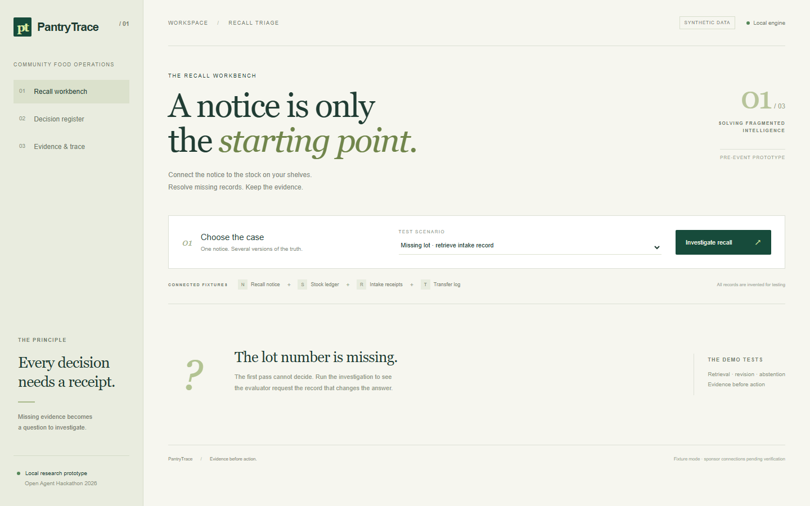
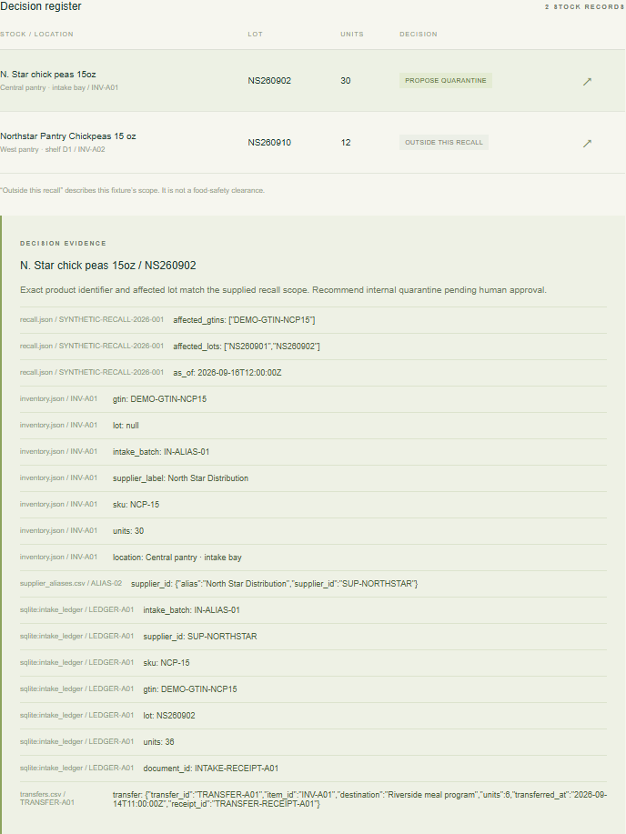
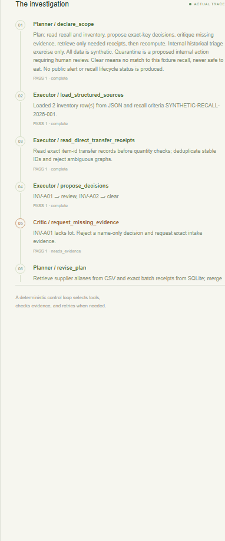
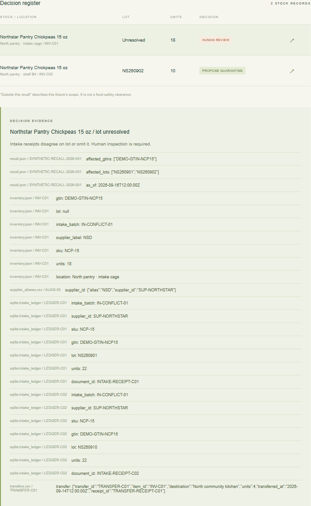

Evidence needed.
Select the case. Start the investigation.

The evaluator requests evidence. The next pass revises the decision.


Human review remains part of the result.

Evidence before action.
Pre-event synthetic prototype. Human approval required.
Sponsor connection status is documented separately.